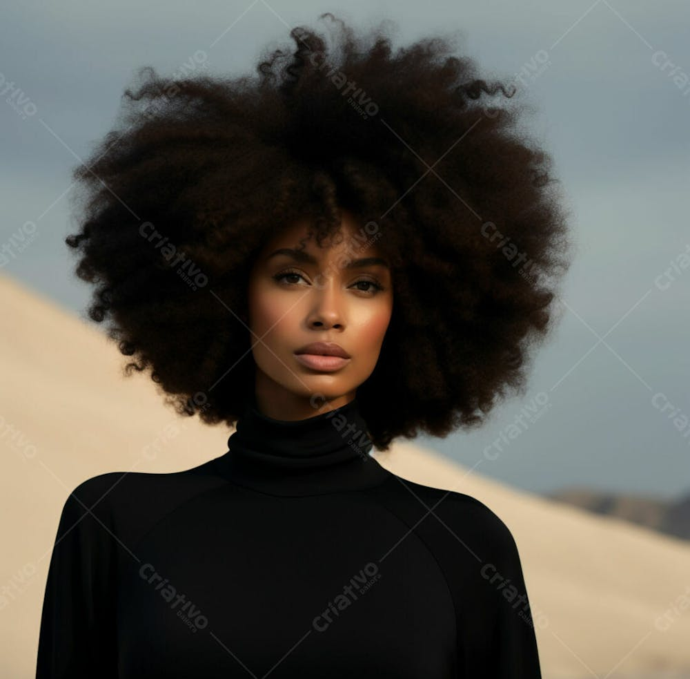

Hayle era uma camponesa, era o orgulho dos seus pais sempre dedicada, atenciosa e amorosa. Uma jovem negra, era magra e alta, tinha cabelos longos, encaracolados e bem pretos.Em um lindo dia de sol a bela jovem foi ao campo colher frutos, para ela aquele dia era comum como todos os outros, mas não imaginava que depois desse dia sua vida mudaria completamente.Harry era um príncipe loiro dos olhos azuis, de fisico esportivo e bem malhado, era alto com 1,96 de altura.
Em um dia como todos Harry foi vistoriar os camponeses, depois de um certo tempo, quando estava quase indo embora ele se depara com uma joven camponesa muito bonita uma beleza cuja qual jamais havia imaginado nem em seus melhores sonhos, sua beleza era anjelical e delicada, neste exato momento o príncipe sentiu algo que nunca havia sentido por nenhuma das mais belas princesas, Mas de uma coisa ele tinha certeza ela seria a sua tão amada e esperada esposa.
O unico problema é que a linhagem da família real era de pele branca e era assim que queriam que continuasse, sua família jamais adimitiria que uma garota negra comandasse o trono. Sua vida esta prestes a ser decidida, ele irá negar seu verdadaeiro amor e assumir o trono ou irá negar o trono para viver seu grande amor?
Hayle já havia terminado de colher os frutos e estava indo para a casa com seu cesto cheio pela colheita quando foi parada por uma guarda do palacio.
-Senhorita, preciso que me acompanhe por favor. A joven fez uma careta de confusão e então perguntou: -A quem devo a honra? -O principe solicitou sua presença ao castelo senhorita. -Me desculpe, mas no momento estou oculpada, preciso imediatamente levar meus frutos para casa. Então a garota faz menção de sair e o guarda pega seu braço. -Por favor senhorita não me faça leva-la a força. -Você não pode me levar a força. A garota diz com uma voz chorosa -Mas eu posso. Ela ouve uma voz diferente e se vira para ver de quem é e se depara com Harry o pricípe cobissado por todas. - Ó vossa alteza- ela faz reverencia a ele- mil perdões principe, mas preciso levar essa cesta para casa- levanta a cesta mostrando-a a ele. - Vou pedir ao meu guarde que lhe acompanhe até a sua residencia e exijo sua presença ao castelo.- Sem problemas alteza. A garota diz receosa e com medo do que poderia acontecer Então o principe se retira e o guarda acompanha a garota até sua humilde casa.
Chegando lá ela Hayle corre para o dentro e começa a contar tudo a sua mãe.
-Mamãe, me ajude, por favor.A mãe sai imediatamente assustada para fora.
-Oque aconteceu querida.
-Eles querem me levar mamãe, por favor, não deixe eles me levarem. A garota diz aos prantos. -Se acalme querida. A mãe diz, mas quando ela percebe que erm os guardas do castelo a mãe recua um passo para tráz e então diz. -Me desculpe filha. E fecha a porta de imediato deixando a garota chorando para fora. -Senhorita precisamos leva-la. Diz o guarda que ainda a esperava de braços cruzadoa. -Mamãe não deixe eles me levarem. A garota diz deseperada, mas então derrepente seu choro cessa. Então a frase sai de sua boca -Você vai se arrepender de me deixar, eu juro por tudo, você vai se arrepender até o fim da sua vida. Hayle diz gritando. -Vamos?. O guarda diz pegando no seu braço. -Não me toque. Diz rispida puxando o braço de volta para sí. HARRY Ao meu ver estavam demorando muito, mas compreendo a demora, seus país não devem ter reagido muito bem a noticia que sua unica filha foi tirada deles, mas não estou com pressa, logo logo ela será minha, ela querendo ou não. Só de imagina-la ja me sinto completamente extasiado. Nunca acreditei em amor a primeira vista, mas confesso que essa garota mexeu com a minha cabeça, tudo nela parece preencher tudo em mim, é como se suas medidas fossem feitas exatamente para mim. Ele ansiava a toque dos labios carnudos da garota ao seu, era como se ele precisasse dela como o ar que ele respira.Então ele escuta o tatear de cascos de cavalo o tirando de seus pensamentos, logo avistando a garota dos seus sonhos. Ele não sabia como iria dizer ao seus país sobre a garota, ele renunciaria a o reino, mas nunca o seu amor, ela faria de tudo por ela, a garota que ele nem sequer sabia o nome, nem que isso significasse ser deserdado e ter que começar uma vida do zero, ele largaria tudo por ela.
-Senhor a garota já está ao seu aguarde. O guarda diz se retirando. Harry desce ao encontro da garota, com o coração a mil, mas ants que chegue até ela se depara com sua mãe subindo as escadas.-Harry meu filho, você mesmo que eu estava procurando, queria te perguntar quem é a garota na porta. Sua mãe em tom de insiguinificancia.
-Depois falamos sobre isso mamãe, preciso resolver outra coisa agora. Ele diz correndo na escada. Então ele á vê e como um sonho, tão delicada e perfeita, tão dele, tão magnifica que ele não enxerga mais o mundo ao seu redor apenas a sua tão encantadora e bela garota.